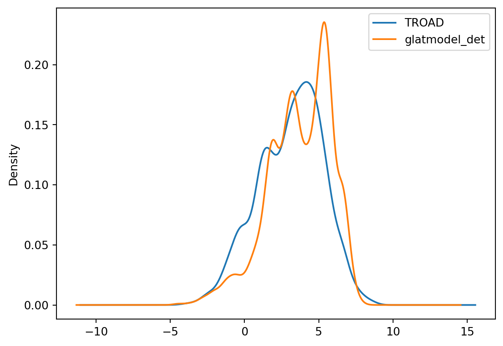

This document presents a preliminary exploratory data analysis of the effect of the new road stations on the performance of the glatmodel. Initially we focus only on displaying the distribution of the stations in time.
Procedure
Observational and forecast data for road temperature (TROAD) is stored in sqlite tables generated for the harp package. There are currently 993 stations in the database.
First we have a brief look at the stations, using a shape file generated previously (zoom in to see the map).
import warningswarnings.filterwarnings('ignore')import osimport geopandas as gpdimport folium as fl# danish data: https://github.com/ok-dk/dagiimport pandas as pdstations_vv = gpd.read_file("data/vejvejr_stations_ll.shp")stations_vv.head(10)m = fl.Map(zoom_start=100, layers_control=True, tiles="OpenStreetMap")for _, r in stations_vv.iterrows(): sim_geo = gpd.GeoSeries(r["geometry"]).simplify(tolerance=0.001) geo_j = sim_geo.to_json() geo_j = fl.GeoJson(data=geo_j, style_function=lambda x: {"fillColor": "orange"}) geo_j.add_to(m)m
Make this Notebook Trusted to load map: File -> Trust Notebook
load domain that includes north jutland’s tip, which I selected using leafmap before
df_njl = gpd.read_file("data/DK/nordjylland.shp") # this one is the whole thingdf_njl = gpd.read_file("nordjylland.geojson")stations_vv.crs = {'init': 'EPSG:4326'}points_njl = gpd.sjoin(stations_vv, df_njl, op ='within')points_njl
geometry
index_right
804
POINT (9.98219 57.58002)
0
805
POINT (10.03619 57.48264)
0
806
POINT (10.03619 57.48264)
0
807
POINT (10.53284 57.45390)
0
808
POINT (10.41964 57.44886)
0
...
...
...
1018
POINT (9.87193 57.09639)
0
1019
POINT (9.87198 57.09615)
0
1020
POINT (9.83833 57.09410)
0
1021
POINT (9.83842 57.09407)
0
1022
POINT (9.98310 57.06596)
0
130 rows × 2 columns
After selecting all stations falling inside the North Jutland domain we are left only with the stations shown below (zoom in to map).
m = fl.Map(zoom_start=100, layers_control=True, tiles="OpenStreetMap")for _, r in points_njl.iterrows(): sim_geo = gpd.GeoSeries(r["geometry"]).simplify(tolerance=0.001) geo_j = sim_geo.to_json() geo_j = fl.GeoJson(data=geo_j, style_function=lambda x: {"fillColor": "orange"})#fl.Popup(r["KOMNAVN"]).add_to(geo_j) geo_j.add_to(m)m
Make this Notebook Trusted to load map: File -> Trust Notebook
Now checking the whole data set. Reading the stations database, observational data and forecast data.
# read the data with the lat lon informationimport sqlite3import pandas as pddbase="data/stations_coords_height.db"con=sqlite3.connect(dbase)com="SELECT * FROM roadstations"df_stations = pd.read_sql(com,con)con.close()# read the observational dataOBS="/home/cap/Downloads/OBSTABLE_TROAD_2023.sqlite"com="SELECT * FROM SYNOP"con=sqlite3.connect(OBS)df_obs = pd.read_sql(com,con)con.close()# read the forecast data from hour 00FCST="/home/cap/Downloads/FCTABLE_TROAD_202301_00.sqlite"com="SELECT * FROM FC"con=sqlite3.connect(FCST)df_fcst = pd.read_sql(com,con)con.close()
Now for convenience we add some extra geo data to the observational data set, making it geopandas dataframe. This way we can select data over a specific domain.
from matplotlib import pyplot as pltnoon_obs["TROAD"].plot.density(legend="obs")#hist(alpha=0.5)noon_fcst["glatmodel_det"].plot.density(legend="fcst")#.hist()plt.show()

Another option: plot them by the hour
hours1=[str(i).zfill(2)+":00"for i in [0,2,4,6,8]]hours2=[str(i).zfill(2)+":00"for i in [1,3,5,7,9]]fcst_by_hour=[jan_fcst.iloc[index.indexer_between_time(h1,h2)] for h1,h2 inzip(hours1,hours2)]fcst_by_hour[0][["datetime","glatmodel_det"]].head(10)